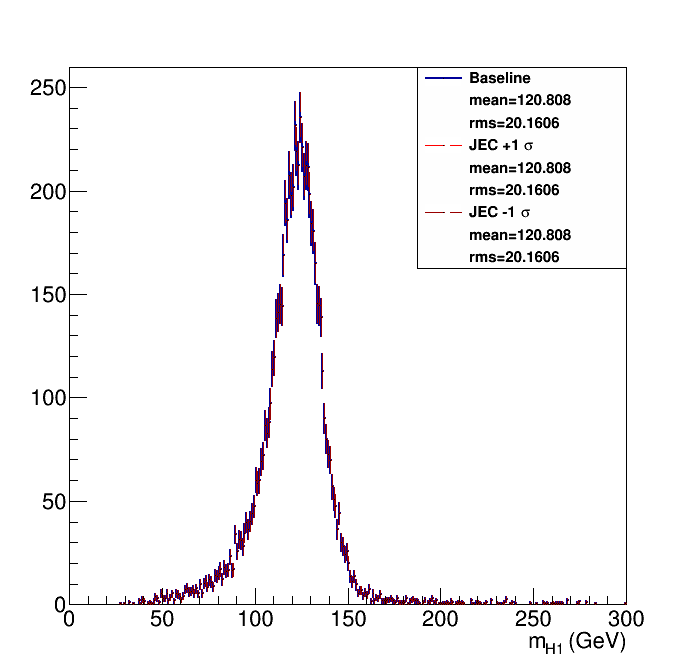
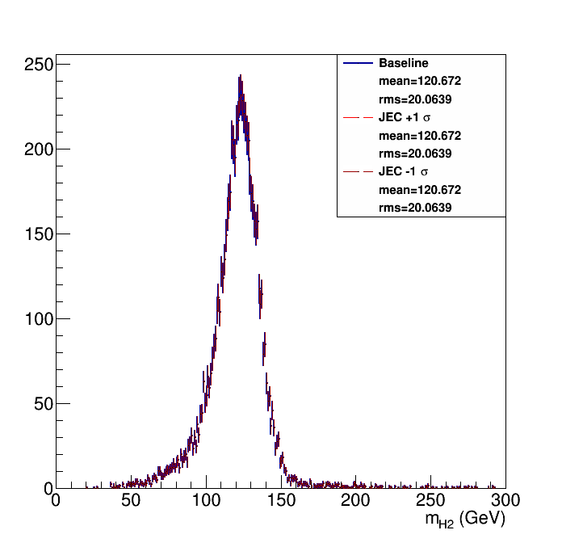
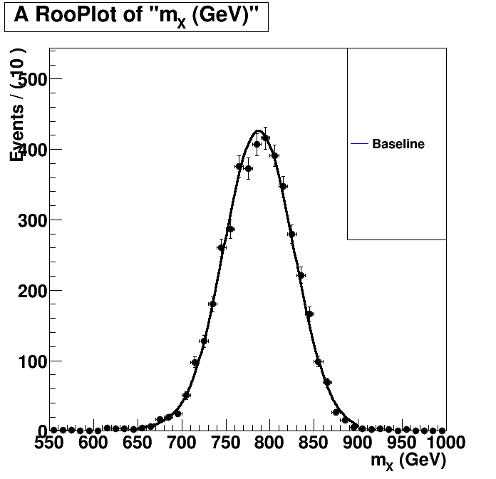
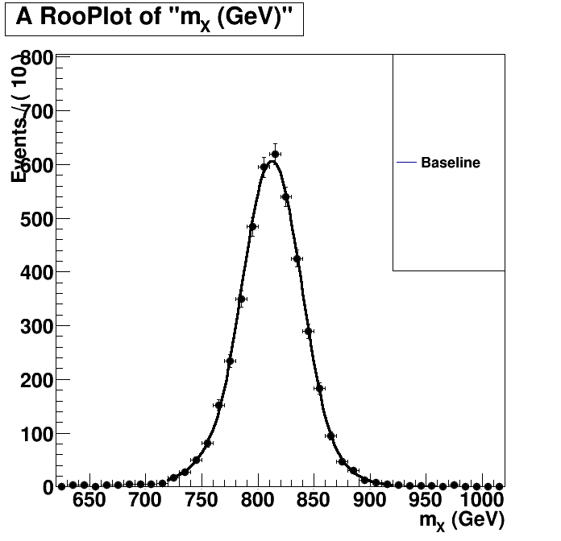

| Higgs 1 mass  | Higgs 2 mass  |
Without Kin-Fit. Fitted to an Exp-Gauss-Exp function.=== Baseline plot === |
With Kin-Fit. Fitted to an Exp-Gauss-Exp function.=== Baseline plot === norm = 991.948 sg_p0 = 812.329 0.481084 sg_p1 = 27.1595 0.434836 sg_p2 = 1.68342 0.0917423 sg_p3 = 1.42513 0.0698249 btag lnN 1.07121 - |